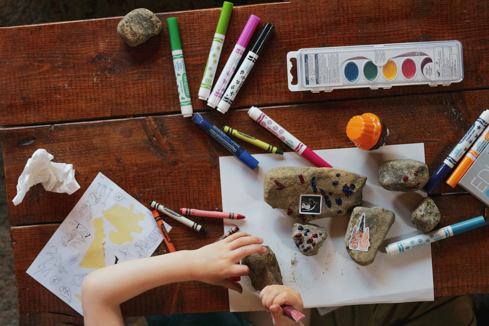
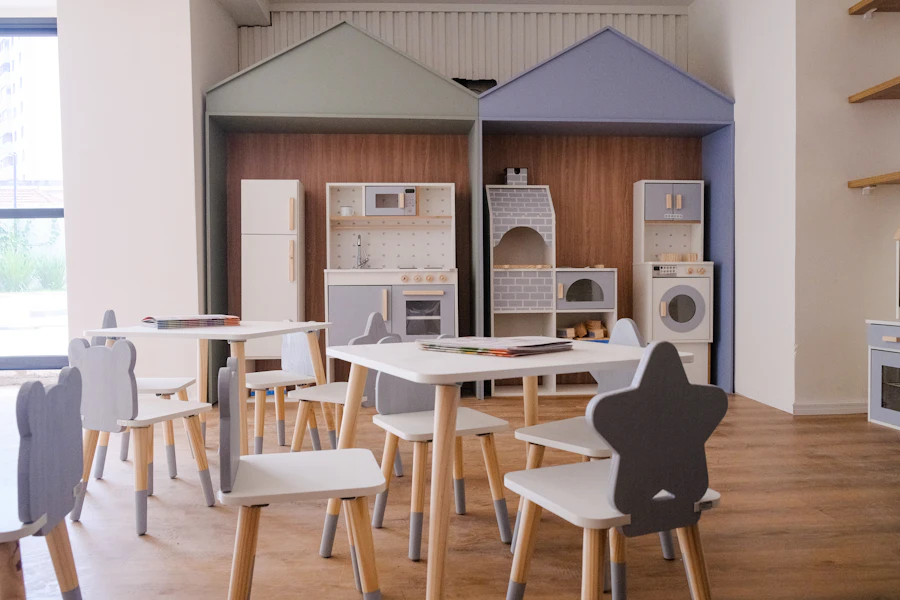

Genitori e famiglie
Per chi desidera affrontare con maggiore serenità le sfide della genitorialità, comprendere i bisogni dei propri figli e trovare strategie educative adatte alla vita quotidiana.

Pedagogia, ascolto e crescita
Accompagno famiglie, bambini e professionisti con percorsi educativi personalizzati, per affrontare ogni fase della crescita con serenità e strumenti concreti.
Dott.ssa Veronica Carletti · Pedagogista ed Educatrice dell'Infanzia
Chi sono
Ciao, sono la Dott.ssa Veronica Carletti, pedagogista, educatrice di nido e infanzia e mamma.
Nel mio lavoro accompagno bambini, ragazzi e famiglie nei momenti di crescita, cambiamento e scoperta, offrendo uno spazio di ascolto e strumenti educativi pensati per le esigenze di ciascuno.
Credo che ogni bambino abbia una propria individualità, tempi da rispettare e risorse da valorizzare. Per questo considero fondamentali la relazione, l'attenzione ai bisogni e la collaborazione con gli adulti che lo accompagnano ogni giorno.
Mi occupo di consulenza pedagogica, supporto all'apprendimento, percorsi di potenziamento e accompagnamento alla genitorialità. Affianco inoltre educatori, insegnanti e servizi educativi attraverso attività di formazione e coordinamento pedagogico.
Il mio obiettivo è aiutare le persone a trovare maggiore consapevolezza e strumenti concreti per affrontare le sfide educative quotidiane.
A chi mi rivolgo
Ogni persona e ogni contesto educativo hanno bisogni diversi. Per questo costruisco percorsi di accompagnamento attenti alle singole esigenze.
Per chi desidera affrontare con maggiore serenità le sfide della genitorialità, comprendere i bisogni dei propri figli e trovare strategie educative adatte alla vita quotidiana.
Per chi ha bisogno di un supporto nell'apprendimento, nello studio e nello sviluppo dell'autonomia, attraverso attività e percorsi personalizzati.
Per insegnanti, educatori e servizi educativi che desiderano confrontarsi, approfondire competenze e migliorare le proprie pratiche professionali.
Approccio
Ogni percorso educativo nasce dall'incontro con una storia unica. Credo nell'importanza di ascoltare senza giudizio, riconoscere i bisogni e individuare insieme strumenti che possano rendere la quotidianità più consapevole e serena.
Creare uno spazio in cui domande, difficoltà ed emozioni possano essere condivise con libertà e rispetto.
Riconoscere l'unicità di ogni bambino, famiglia e contesto, costruendo percorsi coerenti con bisogni, risorse e obiettivi condivisi.
Favorire strumenti che aiutino bambini e adulti ad affrontare con maggiore sicurezza le sfide quotidiane.
Valorizzare il dialogo e la collaborazione, accompagnando ogni cambiamento senza forzature e riconoscendo il valore dei piccoli progressi.
Servizi
Dalla consulenza alle famiglie al supporto all'apprendimento, fino alla formazione dei professionisti: ogni servizio nasce dall'attenzione ai bisogni reali.
Uno spazio di confronto dedicato ai genitori per affrontare dubbi, cambiamenti e difficoltà educative. Un accompagnamento che può riguardare lo sviluppo emotivo e relazionale, le regole, le routine, la scuola, i lutti, le separazioni e l'organizzazione della quotidianità familiare.
Percorsi individuali di supporto allo studio, all'autonomia e alla sicurezza personale. Attività personalizzate dedicate anche a bambini con DSA, BES e ritardo cognitivo, con attenzione all'apprendimento, alla concentrazione e all'autostima.
Spazi di accompagnamento per future mamme e papà, pensati per affrontare con maggiore consapevolezza la nascita e i primi mesi di vita del bambino, condividendo domande, aspettative e nuove esigenze familiari.

Consulenze, supervisione, formazione e affiancamento rivolti a educatori, insegnanti e team di lavoro. Attività di coordinamento e organizzazione pedagogica per nidi e scuole dell'infanzia, con attenzione alla qualità delle esperienze educative.
Come funziona
Ogni percorso parte dall'ascolto e dalla comprensione delle esigenze della persona o della famiglia.
Scrivimi per raccontarmi brevemente la tua richiesta e ricevere le prime informazioni.
Dedichiamo un primo momento a comprendere i bisogni e valutare quale tipo di supporto possa essere più adatto.
Definiamo insieme obiettivi e modalità di accompagnamento, nel rispetto delle esigenze individuali.
Ti accompagno lungo il percorso, con momenti di confronto per valorizzare i progressi e adattare gli obiettivi nel tempo.
Dove ricevo
Indirizzo
In arrivo
FAQ
Quando emergono dubbi o difficoltà legati alla crescita, alle regole, alle routine, alla scuola, alle emozioni o ai cambiamenti familiari. In consulenza ti offro uno spazio di confronto per comprendere meglio la situazione e individuare insieme possibili strategie educative.
Sì, propongo percorsi pedagogici personalizzati di supporto all'apprendimento e di potenziamento, rivolti anche a bambini con DSA e BES. I miei percorsi non sostituiscono valutazioni diagnostiche o interventi sanitari.
Sì. Con il supporto allo studio aiuto a sviluppare un metodo più organizzato, a rafforzare la sicurezza personale e a raggiungere una maggiore autonomia nello svolgimento delle attività scolastiche.
Sì. Mi occupo di consulenza, formazione, affiancamento ai team educativi e coordinamento pedagogico per servizi dedicati all'infanzia.
Puoi contattarmi telefonicamente, via email oppure attraverso il modulo presente sul sito, descrivendo brevemente la tua richiesta. Ti risponderò con le informazioni necessarie per valutare insieme i passaggi successivi.
Contatti